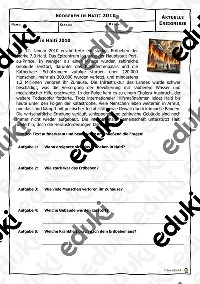

Naturkatastrophen: Arbeitsblätter für Klasse 5–9 (Erdkunde)
Naturkatastrophen verbinden Erdkunde und Sachunterricht. Hochwasser, Sturm, Erdbeben und Waldbrand werden nach Ursachen, Folgen und Vorsorge untersucht.
Typische Bausteine der Einheit sind Hochwasser, Sturmflut und Lawine; darauf aufbauend kommen Waldbrand, Tsunami und Vorsorge zur Sprache.
Im Fach Erdkunde gehört das Thema nach den Lehrplänen der Länder zum festen Programm, überwiegend in der Sekundarstufe I (Klasse 5–9). Die Schülerinnen und Schüler erklären Ursachen und beschreiben Schutzmaßnahmen.
Wer Naturkatastrophen auf mehrere Stunden verteilt, startet mit Hochwasser, übt an Lawine und schließt mit Tsunami ab. Alle Blätter sind kopierfertig und enthalten Lösungen für die schnelle Kontrolle. Zur Differenzierung eignen sich die Lesespurgeschichten mit ihren drei Niveaustufen.
Zum Thema finden Sie 19 Materialien, unter anderem Naturkatastrophen, Die Lawine und Der Tsunami, verteilt auf 3 Lesespurgeschichten, 1 Prüfungstraining und 12 Lückentexte mit Hörverstehen in Klasse 5–9. Ein Notfallplan für die eigene Familie macht Vorsorge konkret.
Das gehört zum Thema
Passende Arbeitsblätter und Materialpakete

Naturkatastrophen - Materialpaket - Naturgefahren Naturkatastrophen #Silvesterknaller24 #edukiknaller24 #Glückskekse25

Die Lawine – Lesespurgeschichte mit Rätselaufgaben (Klasse 8)

Der Tsunami – Lesespurgeschichte mit Rätselaufgaben (Klasse 8)

Das Erdbeben – Lesespurgeschichte mit Rätselaufgaben (Klasse 9)

Vulkane und Erdbeben – Prüfungstraining Erdkunde (Klasse 8)

Sturmflut Lückentext mit Wortspeicher Hörverstehen und Suchsel

Hochwasser Lückentext mit Wortspeicher Hörverstehen und Suchsel

Waldbrand Lückentext mit Wortspeicher Hörverstehen und Suchsel

Tsunami Lückentext mit Wortspeicher Hörverstehen und Suchsel

Katastrophe Lückentext mit Wortspeicher Hörverstehen und Suchsel

Lawine Lückentext mit Wortspeicher Hörverstehen und Suchsel

Waldbrand Lückentext mit Wortspeicher - Naturkatastrophe

Dürre Lückentext mit Wortspeicher Hörverstehen und Suchsel

Hochwasser Lückentext mit Wortspeicher - Naturkatastrophe

Vulkanausbruch Lückentext mit Wortspeicher - Naturkatastrophe

Tsunami Lückentext mit Wortspeicher - Naturkatastrophe

Erdbeben Lückentext mit Wortspeicher Hörverstehen und Suchsel

Erdbeben in Haiti - Rückblick - Aktuelle Ereignisse

Waldbrände in Kalifornien - Aktuelle Ereignisse
Häufige Fragen
Für welche Klassenstufe passen die Arbeitsblätter zu Naturkatastrophen?
Die 19 Materialien zu diesem Thema sind für Klasse 5–9 ausgelegt, die meisten davon für Klasse 7. Einzelne Titel lassen sich mit Anpassung auch eine Stufe darunter oder darüber einsetzen.
Welche Inhalte decken die Materialien zu Naturkatastrophen ab?
Inhaltlich reicht die Auswahl von Hochwasser über Sturmflut und Lawine bis zu Tsunami; Details stehen bei den einzelnen Materialien.
Wie setze ich Naturkatastrophen im Unterricht ein?
Ein Notfallplan für die eigene Familie macht Vorsorge konkret. Danach genügt meist ein Material als Einstieg und eines zum Üben.
Mehr Material nach Fach und Klasse
- Alle Materialien Erdkunde
- Arbeitsblätter Erdkunde Klasse 5
- Arbeitsblätter Erdkunde Klasse 6
- Arbeitsblätter Erdkunde Klasse 7
- Arbeitsblätter Erdkunde Klasse 8
- Arbeitsblätter Erdkunde Klasse 9
- Unterrichtsmaterial Klasse 5
- Unterrichtsmaterial Klasse 6
- Unterrichtsmaterial Klasse 7
- Unterrichtsmaterial Klasse 8
- Unterrichtsmaterial Klasse 9
Verwandte Lehrplanthemen
- Erdbeben und Vulkane (Erdkunde, Klasse 5–9)
- Energie, Rohstoffe und Umwelt (Erdkunde, Klasse 4–10)
- Rhein, Donau und die großen Flüsse (Erdkunde, Klasse 4–8)
- Alpen und Gebirge (Erdkunde, Klasse 4–8)
- Klimawandel und Klimaschutz (Erdkunde, Klasse 5–10)